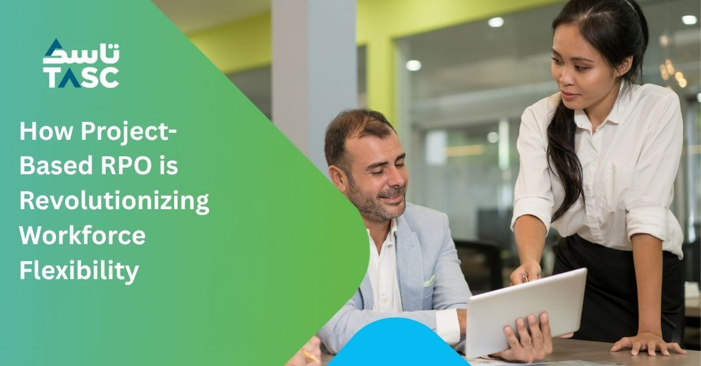

Retail
A retail business building a Saudi workforce with limited recruitment infrastructure.
205 Saudi nationals onboarded in six weeks across 12+ cities.Read the case study (PDF, opens in a new tab)TASC works as your recruitment team in Saudi Arabia, managing ongoing hiring from planning and candidate search to interviews and offers. We adjust the team as your needs change and measure performance against agreed targets for hiring speed, cost and quality. You decide who to hire.
Hires onboarded monthly through TASC’s internal talent acquisition operation.
Saudi national profiles in our talent database.
We agree targets for hiring speed, cost and quality, then review the results with you. You can see what is working, where hiring is slowing and what needs to change.
See how Enterprise RPO worksHear Nicholas Joseph, Operations Director at SenseTime, discuss working with TASC on recruitment, onboarding and launching across multiple locations in Saudi Arabia.
Explore the Saudi case studiesA retail business building a Saudi workforce with limited recruitment infrastructure.
205 Saudi nationals onboarded in six weeks across 12+ cities.Read the case study (PDF, opens in a new tab)
A manufacturer recruiting engineers, technicians and project professionals with specialist experience.
250+ technical professionals deployed.Read the case study (PDF, opens in a new tab)
An automotive business building Saudi sales and showroom teams across multiple cities.
120+ Saudi nationals deployed in six weeks.Read the case study (PDF, opens in a new tab)Project RPO provides a dedicated team for a specific requirement, such as a new facility, market entry or seasonal recruitment programme.
Explore Project RPOYour TASC recruitment lead works with your HR team and hiring managers to plan the work, manage progress and resolve issues.
We agree the team size and responsibilities around your hiring needs.
See how Enterprise RPO differs from an onsite recruiterReview delivery against agreed targets, see where recruitment is slowing and follow the actions assigned to your team and TASC.
Average · target ≤ 30 days
Approved vacancy to accepted offer. Average across offers accepted in September 2026.
Target ≤ SAR 5,000
Sample recruitment cost of SAR 216,000 divided by 48 hires joining in September. All sample cohort joiners joined in this month. Included costs and reporting scope are agreed for each engagement.
Manager feedback · target ≥ 4.0/5
Six month retention · target ≥ 90%
Feedback: average of 20 sample manager responses in September. Retention: 86 of 100 March joiners retained at their six month review. Separate indicators, not a combined score. Twelve month retention is not yet due for this cohort.
Recruitment experience in the Gulf, local decision makers and tools our own teams use every day.
Our teams recruit across the UAE and Saudi Arabia, bringing established client relationships and knowledge of local talent markets to your hiring.
Work directly with regional leaders who can agree the recruitment approach and respond when your hiring needs change. Your named RPO lead takes responsibility for delivery.
TASC’s own recruiters use Hyrra, Recruitify and Onboardify. We bring that experience to finding candidates, coordinating recruitment and preparing people to join.
Our database includes 44,000+ Saudi national profiles to support candidate searches and help plan your Saudi hiring.
Our internal recruitment intelligence helps shape candidate searches around your roles and locations. The Control Tower tracks hiring speed, cost and quality, showing where the team needs to act.
Explore talent availability, role requirements and market signals to inform your recruitment priorities. Our reports offer a starting point for a more focused discussion about your hiring plans.
Request insights for your hiring requirementWhat our talent insights data reveals about front office, housekeeping and food service hiring.
Understand the options and what to consider when planning recruitment support.
Explore what an RPO partner does, the available models and questions to ask before choosing a provider.
Read article: Understanding recruitment process outsourcing (opens in a new tab)
Understand how project RPO can support a defined hiring requirement, such as an opening or expansion.
Read article: Planning recruitment for a specific project (opens in a new tab)See how a dedicated recruitment team can support your hiring, while you keep control of the decisions.
Book an RPO consultationA dedicated team manages the agreed recruitment scope, which can include workforce planning, sourcing, screening, coordination, reporting and performance reviews.
A named RPO lead works with HR leaders and hiring managers. We agree responsibilities, approval processes and reporting before delivery begins.
Your business decides headcount and budgets, role requirements, selection criteria, final hiring decisions and internal approvals.
We review agreed measures, candidate movement, delays and hiring manager feedback. Each review identifies actions, owners and review dates.
Capacity is reviewed against workforce demand. Changes to team resources, scope and delivery plans are agreed with your business.
Yes. Workflows, technology connections and reporting requirements are agreed during solution design. Integration with every system is not automatic.
Enterprise RPO manages ongoing recruitment across an agreed business scope. Project RPO supports a defined hiring programme with agreed roles, volumes and dates.
For Saudi operations, the agreed scope can include Saudi talent pipelines, national hiring, retention support and workforce forecasting. It does not guarantee compliance or a particular Nitaqat band.
We agree workforce priorities, delivery responsibilities, systems access, service levels and the team before recruitment delivery starts.
Tell us a little about your recruitment setup so we can arrange a relevant conversation.